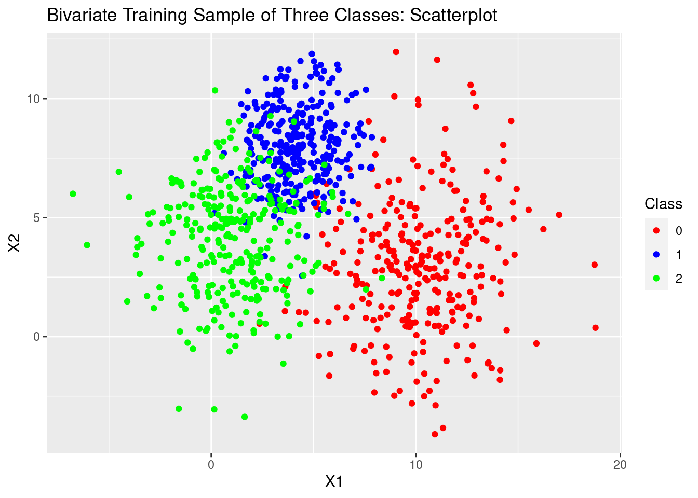
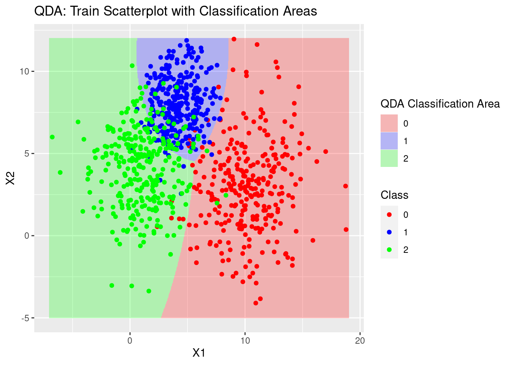
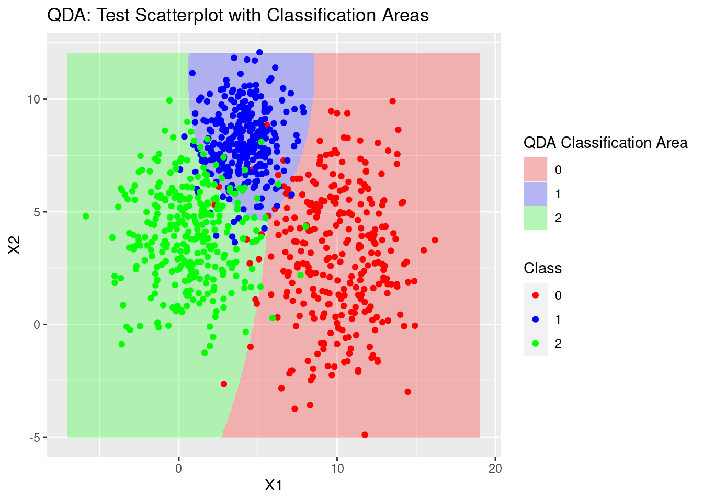

This example walks through using quadratic discriminant analysis to classify observations in a three-class multivariate setting with (idealized) generated data. I’d suggest reading the multivariate LDA example first.
Unlike linear discriminant analysis,
Though not shown here, this example uses the tidyverse and MASS packages.
We’ll generate data with three possible outcome classes (coded as 0, 1, and 2) with two independent variables/predictors.
We’ll use MASS’s mvnorm function to sample from a multivariate normal distribution. Throughout this example I’ll refer to the first variable as X1 and the second variable as X2. For each class we’ll construct a vector of means for X1 and X2, randomly sampled integers between 1 and 10:
X1_means <- sample.int(10, 3, replace = FALSE)
X2_means <- sample.int(10, 3, replace = FALSE)
pop_mean_c0_X1 <- X1_means[1]
pop_mean_c1_X1 <- X1_means[2]
pop_mean_c2_X1 <- X1_means[3]
pop_mean_c0_X2 <- X2_means[1]
pop_mean_c1_X2 <- X2_means[2]
pop_mean_c2_X2 <- X2_means[3]
mu_c0 <- c(pop_mean_c0_X1, pop_mean_c0_X2)
mu_c1 <- c(pop_mean_c1_X1, pop_mean_c1_X2)
mu_c2 <- c(pop_mean_c2_X1, pop_mean_c2_X2)As noted above, QDA does not assume that the class covariance matrices are identical so instead of creating one randomly generated covariance matrix we will create one for each outcome class. For this example, we’ll randomly choose class-level correlations and class-level variances (between 1 and 10).
pop_c0_corr <- runif(1, 0, 1)
pop_c1_corr <- runif(1, 0, 1)
pop_c2_corr <- runif(1, 0, 1)
pop_var_c0 <- runif(1, 0, 10)
pop_var_c1 <- runif(1, 0, 10)
pop_var_c2 <- runif(1, 0, 10)Just like in the multivariate LDA example we’ll generate 300 sample observations for each class, once for a training set and once for a test set. We could use the same process as in the multivariate LDA example, but we can be more efficient. Using a loop with the get and assign functions, we can variably refer to our class-level correlations and variances as well as variably generate our class covariance matrices and class sample data sets.
n <- 300
for (i in 0:2) {
class <- paste("c", i, sep = "")
class_var <- paste("pop_var", class, sep = "_")
class_corr <- paste("pop", class, "corr", sep = "_")
mu = paste("mu", class, sep = "_")
temp_sigma <- matrix(c(get(class_var), get(class_corr),
get(class_corr), get(class_var)), 2, 2)
temp_train_data <- mvrnorm(n = n,
mu = get(mu),
Sigma = temp_sigma)
temp_test_data <- mvrnorm(n = n,
mu = get(mu),
Sigma = temp_sigma)
assign(paste(class, "sigma", sep = "_"), temp_sigma)
assign(paste(class, "train", sep = "_"), temp_train_data)
assign(paste(class, "test", sep = "_"), temp_test_data)
}Now all that’s left is to bind the class training and test data together.
train_sample_df <- bind_rows(
tibble(y = 0,
X1 = c0_train[,1],
X2 = c0_train[,2]),
tibble(y = 1,
X1 = c1_train[,1],
X2 = c1_train[,2]),
tibble(y = 2,
X1 = c2_train[,1],
X2 = c2_train[,2])
)
test_sample_df <- bind_rows(
tibble(y = 0,
X1 = c0_test[,1],
X2 = c0_test[,2]),
tibble(y = 1,
X1 = c1_test[,1],
X2 = c1_test[,2]),
tibble(y = 2,
X1 = c2_test[,1],
X2 = c2_test[,2])
)Generally, our data here will look a lot like the data in the multivariate LDA example: three clouds of data points, one for each class, except that in this case the clouds may not be similarly-shaped since each comes from distributions with distinct covariance matrices. We can see this with a simple scatterplot. We’ll focus on the training data.
train_sample_scatter <- ggplot(train_sample_df) +
geom_point(aes(x = X1, y = X2, color = as.factor(y))) +
scale_color_manual(values = c("red", "blue", "green"),
name = "Class") +
labs(title = "Bivariate Training Sample of Three Classes: Scatterplot")
Just like in the univariate LDA and multivariate LDA examples, we will use the Bayes classifier and its decision boundaries to compare our model against since discriminant analysis is the same as applying the Bayes classifier but with sample estimates.
Deriving the pairwise discriminant functions in the QDA case where we don’t assume that the class covariance matrices are identical is the exact same process as in the multivariate LDA case: we simply end up with slightly uglier discriminant functions since we don’t assume identical covariance matrices. In fact, the derivation is even easier than in multivariate LDA and is really just an exercise in remembering log rules.
Just like in the multivariate LDA example, we start by taking Bayes’ theorem for continuous variables and plugging in the multivariate normal PDF and then taking the log ratio of conditional probabilities.
Just as in the univariate and multivariate LDA examples, \(\color{red}{\pi}\) in the PDF is the literal value pi, not a prior probability. \(p\) is the number of variables.
Remembering our log rules, we can break this down:
Then, like in the multivariate LDA case, all that’s left to do is to evaluate this expression at the decision boundary (where \(\frac{\Pr(Y = k|X = x)}{\Pr(Y = l|X = x)} = 1\) and so \(\log\frac{\Pr(Y = k|X = x)}{\Pr(Y = l|X = x)} = 0\)) and then reorganize the expression to find our discriminant functions.
Just like in the univariate and multivariate LDA cases, for a given observation the Bayes classifier assigns that observation to a class based on which class’s discriminant function evaluates largest.
Creating the discriminant functions, classifying with the Bayes classifier, and classifying observations in our training set using the population parameters we know is straightforward in R. This will mirror what we did in the multivariate LDA example but with our new discriminant functions.
First, we’ll construct vectors of our population means by class as well as the class-wise prior probabilities. In this example we know that the class-wise prior probabilities are equal, but we’ll calculate them each separately for thoroughness.
pop_c0_mean_vec <- c(pop_mean_c0_X1, pop_mean_c0_X2)
pop_c1_mean_vec <- c(pop_mean_c1_X1, pop_mean_c1_X2)
pop_c2_mean_vec <- c(pop_mean_c2_X1, pop_mean_c2_X2)
c0_prior <- n / (n * 3)
c1_prior <- n / (n * 3)
c2_prior <- n / (n * 3)Then we’ll build our three discriminant functions and apply them inside the decision rule for classification described above.
d0_bayes <- function(x_vec){
-.5 * log(norm(c0_sigma, type = "2")) -
.5 * t(x_vec - mu_c0) %*% solve(c0_sigma) %*% (x_vec - mu_c0) +
log(c0_prior)
}
d1_bayes <- function(x_vec){
-.5 * log(norm(c1_sigma, type = "2")) -
.5 * t(x_vec - mu_c1) %*% solve(c1_sigma) %*% (x_vec - mu_c1) +
log(c1_prior)
}
d2_bayes <- function(x_vec){
-.5 * log(norm(c2_sigma, type = "2")) -
.5 * t(x_vec - mu_c2) %*% solve(c2_sigma) %*% (x_vec - mu_c2) +
log(c2_prior)
}
bayes_classifier <- function(x_vec){
score_c0 <- d0_bayes(x_vec)
score_c1 <- d1_bayes(x_vec)
score_c2 <- d2_bayes(x_vec)
if (score_c0 > score_c1 & score_c0 > score_c2) {
0
} else if (score_c1 > score_c0 & score_c1 > score_c2) {
1
} else {
2
}
}
train_sample_df$bayes_predicted_y <- apply(train_sample_df[, c("X1", "X2")],
1, bayes_classifier)Just like in the multivariate LDA case, the only difference between the Bayes classifier above and the QDA classifier is that we almost surely can’t know the population covariance matrices and means. To move forward, we need to estimate them.
There really isn’t any theory here: for the means we simply calculate the classwise means for X1 and X2 from our sample and for the covariance matrices we can simply use R’s `cov’ function. Why don’t we need to do the whole estimated weighted covariance matrix process like we did in the multivariate LDA example? Because we’re not assuming a common covariance matrix.
First we’ll estimate our means and covariance matrices by class.
sample_c0_mean_vec <- c(mean(train_sample_df$X1[train_sample_df$y == 0]),
mean(train_sample_df$X2[train_sample_df$y == 0]))
sample_c1_mean_vec <- c(mean(train_sample_df$X1[train_sample_df$y == 1]),
mean(train_sample_df$X2[train_sample_df$y == 1]))
sample_c2_mean_vec <- c(mean(train_sample_df$X1[train_sample_df$y == 2]),
mean(train_sample_df$X2[train_sample_df$y == 2]))
sample_cov_mat_c0 <- cov(train_sample_df %>%
filter(y == 0) %>%
dplyr::select(X1, X2))
sample_cov_mat_c1 <- cov(train_sample_df %>%
filter(y == 1) %>%
dplyr::select(X1, X2))
sample_cov_mat_c2 <- cov(train_sample_df %>%
filter(y == 2) %>%
dplyr::select(X1, X2))The only things left to calculate are the classwise prior probabilities. Again, we know that these are equal because of our generated samples so we don’t really need to calculate them separately, but we will anyway for thoroughness.
c0_prior <- nrow(train_sample_df[train_sample_df$y == 0,]) /
nrow(train_sample_df)
c1_prior <- nrow(train_sample_df[train_sample_df$y == 1,]) /
nrow(train_sample_df)
c2_prior <- nrow(train_sample_df[train_sample_df$y == 2,]) /
nrow(train_sample_df)Then, just like with the Bayes classifier, we create our discriminant functions and apply them to the data via a classifier function.
d0_QDA <- function(x_vec){
-.5 * log(det(sample_cov_mat_c0)) -
.5 * t(x_vec - sample_c0_mean_vec) %*% solve(sample_cov_mat_c0) %*%
(x_vec - sample_c0_mean_vec) +
log(c0_prior)
}
d1_QDA <- function(x_vec){
-.5 * log(det(sample_cov_mat_c1)) -
.5 * t(x_vec - sample_c1_mean_vec) %*% solve(sample_cov_mat_c1) %*%
(x_vec - sample_c1_mean_vec) +
log(c1_prior)
}
d2_QDA <- function(x_vec){
-.5 * log(det(sample_cov_mat_c2)) -
.5 * t(x_vec - sample_c2_mean_vec) %*% solve(sample_cov_mat_c2) %*%
(x_vec - sample_c2_mean_vec) +
log(c2_prior)
}
QDA_classifier <- function(x_vec){
score_c0 <- d0_QDA(x_vec)
score_c1 <- d1_QDA(x_vec)
score_c2 <- d2_QDA(x_vec)
if (score_c0 > score_c1 & score_c0 > score_c2) {
0
} else if (score_c1 > score_c0 & score_c1 > score_c2) {
1
} else {
2
}
}
train_sample_df$QDA_predicted_y <- apply(train_sample_df[, c("X1", "X2")],
1, QDA_classifier)The nice non-linear decision boundaries shown in Elements of Statistical Learning were created through an extensive contouring process, which is way outside the scope of this working example.1 While we won’t plot the decision boundaries directly, we can pretty easily plot the decision areas using an approach similar to that we use for plotting a maximum likelihood surface in the univariate logistic regression example. This is a hacky approach in this example in a way that it’s not in the logistic regression example, but if it works it should do the trick well enough.
The basic idea is that we should be able to apply the QDA classifier to a set of cartesian coordinates for our X1 and X2 variables and then show the approximate areas in which the QDA classifier would choose one class or another. This obviously gives us the approximate decision boundaries between classes as well.
First, we can create our “surface” of coordinates by creating a tibble of every combination of X1 and X2 values within some space. We’ll restrict our space to the smallest and largest train sample values for X1 and X2. We obviously can’t classify every point in this space, so we’ll use seq to create a tibble of coordinates from approximately the smallest and largest values of our two variables in some increment (in this case we’ll use .05).
X1_vec <- seq(floor(min(train_sample_df$X1)), ceiling(max(train_sample_df$X1)), .05)
X2_vec <- seq(floor(min(train_sample_df$X2)), ceiling(max(train_sample_df$X2)), .05)
surface <- expand_grid(X1_vec, X2_vec)
colnames(surface) <- c("X1", "X2")We’ve already created our LDA classifier, so we can simply apply it to our surface tibble of coordinates.
surface$class <- apply(surface[, c("X1", "X2")], 1, QDA_classifier)Rather than geom_contour_filled like in the logistic example, we use geom_tile because our decision areas aren’t parts of a 3D surface and the classifications aren’t part of a continuous scale. ggplot2 layers plots based on what order they are expressed in the ggplot expression, so instead of adding the tile layer to our existing scatterplot (which would layer the tiles on top of the scatter points) we will rewrite the geom_point expression that provides the scatterplot after the geom_tile expression (which layers the scatterplot on top of the background of the classification areas).
QDA_decision_areas <- ggplot() +
geom_tile(data = surface, aes(x = X1, y = X2, fill = as.factor(class)), alpha = .25) +
scale_fill_manual(values = c("red", "blue", "green"),
name = "QDA Classification Area") +
geom_point(data = train_sample_df, aes(x = X1, y = X2, color = as.factor(y))) +
scale_color_manual(values = c("red", "blue", "green"),
name = "Class") +
labs(title = "QDA: Train Scatterplot with Classification Areas")
Using the Bayes and QDA classifiers we’ve built, we can easily apply both to the test data just like we did with the training data.
test_sample_df$bayes_predicted_y <- apply(test_sample_df[, c("X1", "X2")],
1, bayes_classifier)
test_sample_df$QDA_predicted_y <- apply(test_sample_df[, c("X1", "X2")],
1, QDA_classifier)What does the misclassification rate for QDA look like?
QDA_misclass_rate <- nrow(test_sample_df[test_sample_df$y !=
test_sample_df$QDA_predicted_y,]) /
nrow(test_sample_df)
QDA_misclass_rate * 100## [1] 6.888889And what does the misclassification rate for our (optimal) Bayes classifier look like?
bayes_misclass_rate <- nrow(test_sample_df[test_sample_df$y !=
test_sample_df$bayes_predicted_y,]) /
nrow(test_sample_df)
bayes_misclass_rate * 100## [1] 6.222222We can easily visualize how our trained QDA decision decision areas map to our test data. Using the tile-and-scatterplot we created above, all we need to do is simply change our train data to our test data for the scatterplot layer.
QDA_decision_areas_test <- ggplot() +
geom_tile(data = surface, aes(x = X1, y = X2, fill = as.factor(class)), alpha = .25) +
scale_fill_manual(values = c("red", "blue", "green"),
name = "QDA Classification Area") +
geom_point(data = test_sample_df, aes(x = X1, y = X2, color = as.factor(y))) +
scale_color_manual(values = c("red", "blue", "green"),
name = "Class") +
labs(title = "QDA: Test Scatterplot with Classification Areas")
This is clearly a longer way of saying “I don’t know how to do it and don’t want to learn it for this.”↩︎